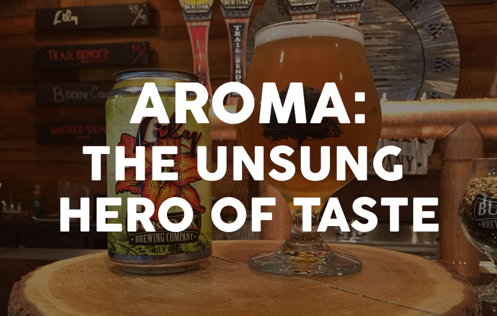
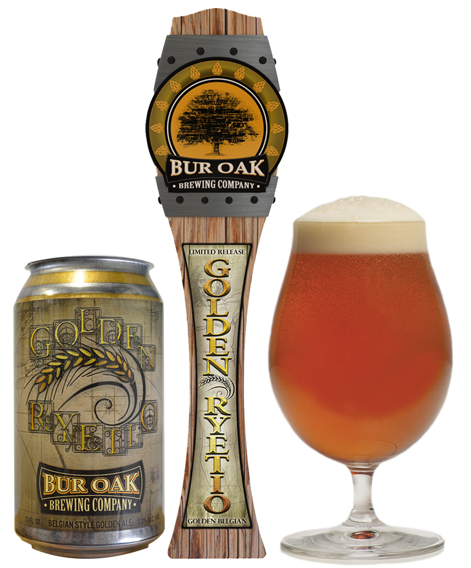
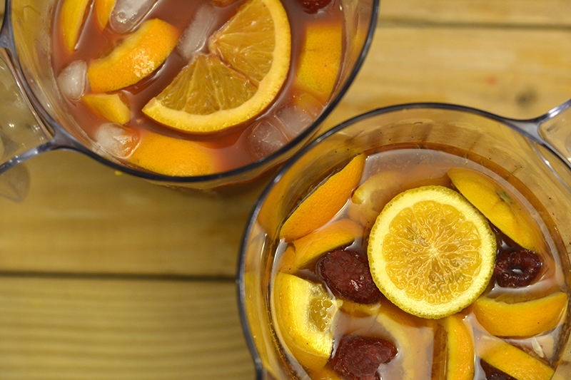
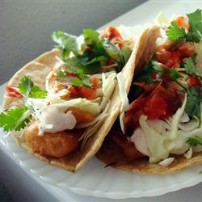
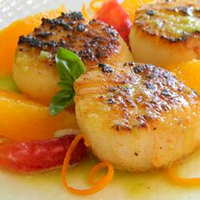
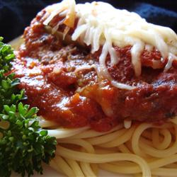
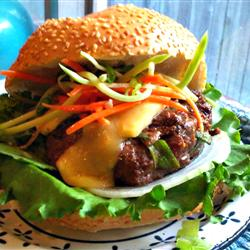

Nov. 8, 2016
With all the different beer styles out there, it can be overwhelming to sort through the vocab and understand what makes one beer distinct from another. Sure, you probably know the difference in taste between a pale ale and a porter, but when your overly curious work buddy asks you if a stout is a lager, your beer brain suddenly fizzes out. So, we’ve decided to break down the ABC’s of beer to help you understand the complexities of each style. Consider this your Rosetta Stone for speaking the language of craft beer.
Aug. 19, 2016
For most people, once a beer is poured and slid across the bar, the first step is to start chuggin’. Sure, you may have an appreciation for the taste, but there is a more subtle quality of beer that you might be missing out on. It’s one of the most important (and most overlooked) characteristics of beer − the smell.
July 21, 2016
Our brand new Golden Ryetio is a nod to the Golden Ratio found in nature and design (and now beer). The Fibonacci sequence inspired the grain bill (which includes rye malt) for this mildly sweet and well-balanced Belgian style ale. (And yes, we are aware that we are nerds. You’ll thank us when you try this beer.)
July 20, 2016

Summer is in full swing and with it comes one of our favorite pastimes: backyard BBQs! It’s time to break out the grill and let your friends at Bur Oak Brewing Company help you craft the perfect BBQ.
July 18, 2016
Craft beer will always be our favorite summertime drink, but sometimes it’s fun to change things up! Any party can offer the usual drinks, but we’re here to take yours to the next level. We’ve crafted our very own cocktail recipe and the perfect summer sangria, both of which pair the tangy flavor of orange and the sweet taste of berries. Using our summer brew Lily Ale as a base, both of these drinks have the potential to make any gathering you’re hosting a hit with all of your guests. We’re loving these new recipes, so let us know if you are too!
July 11, 2016

Most styles of beer carry a well-defined ancestry − a consistent, surveyable history that brewers and drinkers alike can tap into to fully appreciate a certain brew. The saison, however, is a different story.
July 29, 2014
Learn how to make delicious fish tacos which pairs perfectly with our Sacred Sun Saison Ale!
July 29, 2014
Pair your spicy sea scallops with our Trail Bender Wheat Ale.
July 29, 2014
Your veal parmesan will taste even better paired with Boone County Brown Ale.
July 28, 2014
Follow this recipe to learn how to grill up an asian barbecue burger.
Bur Oak Brewing is inspired by those who share a deep connection to their craft and their community. In our new video series, we spotlight local community members who have both a love for what they do and where they do it. We call them our well crafted heroes. We hope you are inspired by their stories and encouraged in your continued pursuit of a life well crafted. Cheers!
Michael Marcum makes art out of metal. You may have seen his trophies, installations and other original metal creations at the True/False Film Festival, Tiger Hotel or The Social Room in downtown Columbia. His quirky pieces blend form and function and have been providing inspiration and enjoyment to the community for over a decade.
The Big Tree Cycling team knows a thing or two about commitment to one’s craft. 4 a.m. alarms, flat tires, aching muscles and treacherous hills are all in a day’s work for these road warriors. But the camaraderie, sense of accomplishment and freedom that comes from taking on the open road, makes it worth it every time.
The Maplewood Barn Community Theater has been a Columbia staple for nearly a half century. Its iconic red barns and outdoor stage make it an enchanting place for families to enjoy a night out at the theater. However, none of it would be possible without the actors, directors and production assistants who invest their passion for entertaining and countless hours of preparation to bring each production to life.
Dennis Schnell has been a dairy farmer for nearly two decades. He endures long days, cold winters, and tight budgets to produce a quality product for the public. Along with his self-proclaimed stubbornness, Dennis is driven by a love for nature, the freedom to be his own boss, and the chance to pass along a noble craft to his kids.